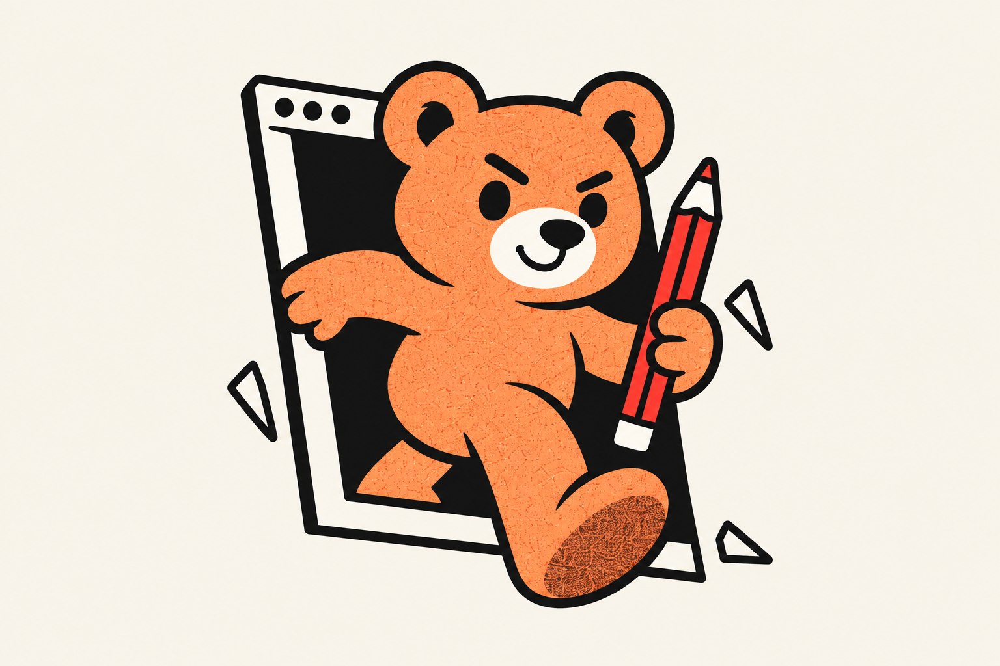
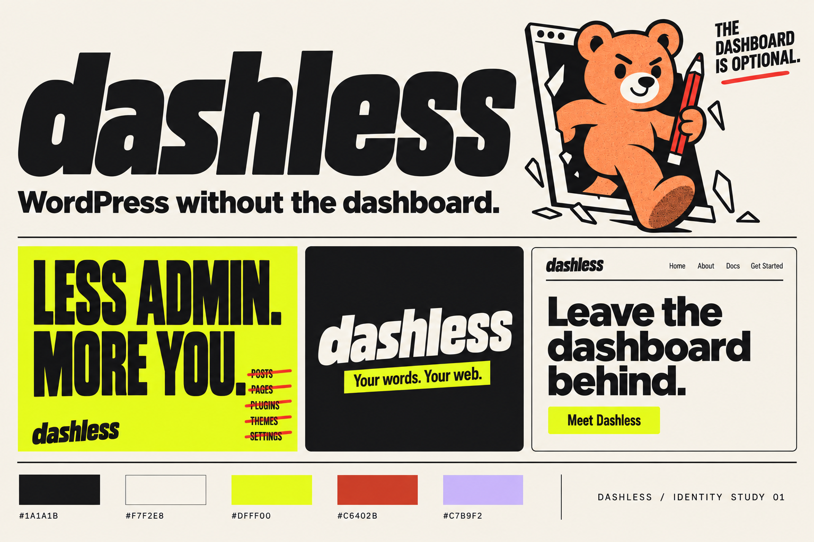

Work in conversation.
Draft and revise through local Codex. Make the site yours without making the dashboard your daily workplace.
A first identity direction for software with a little nerve. Bold, playful, and firmly on the publisher’s side.
Your next post deserves more attention than your admin menu. Dashless brings publishing into conversation, with your site and your decisions at the center.

Keep the foundation. Change the way you work. Dashless gives independent publishers a conversational workflow with real previews, explicit approval, and a website they control.
Draft and revise through local Codex. Make the site yours without making the dashboard your daily workplace.
Review the actual page. Publish the version you approved. The attitude is playful; publication stays deliberate.
WordPress holds your content. Astro presents your site. The source stays yours. Your publication has somewhere to go.
Heavy type. Acid yellow. Warm paper. One deliberate interruption in an otherwise clear layout. The spirit of an independent computer club with something to say.

Refinement for final campaign art: cross out abstract admin-menu strokes, rather than “Posts” or “Pages.” We are leaving the interface behind, not removing the content.
A heavy, forward-moving wordmark with softened corners. Friendly enough to belong on a laptop; strong enough to carry a campaign on its own.
Ink on Paper
Paper on Ink
These live specimens are typeset approximations. The board establishes the custom lettering direction. Master vector artwork and a simplified “d” favicon come after the direction is chosen. Use “Dashless” in prose; “dashless” in the wordmark.
Ink and Paper do the everyday work. Acid is the unmistakable accent. Vermilion and Lilac are occasional supporting voices.
Click a swatch to copy. Set dark Ink type on Acid; never white. Use Paper type on Ink or Vermilion. Apricot #E8AC71 belongs mainly to the bear.
Oversized grotesk headlines do the shouting. A quiet system sans handles the explanation. Monospace labels add a little software DNA.
Short headlines. Tight spacing. Deliberate line breaks.
Draft in conversation. Preview your real site. Publish the version you approved. Keep the explanation as clear as the invitation.
DRAFT → PREVIEW → APPROVE → PUBLISH
The prototype uses Arial Black, system sans, and system monospace. No external fonts. The final logo is custom lettering, separate from the body type system.
Opinionated in public. Precise at the point of action. The joke is about admin busywork, never about the person doing it.
Draft in conversation. Preview your site. Publish the version you approved.
Sound like this.Direct verbs. Concrete benefits. A confident invitation. A little humor when the stakes are low.
Keep the promises real.No “magic,” “never log in again,” or automatic publishing claims. Say exactly what happened and what comes next.
Keep the warmth of the original teddy. Give it a pencil, a confident stride, and a mischievous expression. It is on the publisher’s side.
Use it in campaigns, onboarding, and release notes. Let it review a page or point toward a preview. Give serious product states enough space to speak plainly.
Website, campaign card, sticker. The same ingredients can be calm enough to explain the product or loud enough to announce it.
Draft and revise in conversation. Preview your real site. Publish the version you approved.
Get started ↗Your words. Your web.
Application studies. The landing-page controls above are visual specimens; no installation or publication action is connected.
This identity belongs to the tool. The publisher’s site keeps its own name, its own voice, and its own visual world. No mandatory bear. No compulsory badge.
The complete guide includes positioning, logo rules, color, typography, mascot direction, writing examples, launch copy, and application guidance.
First creative proposal. Final vector logo masters, favicon, and production campaign exports follow direction selection. Generated visual studies use the built-in image generation tool; prompts and revision notes are saved alongside the guide.
{kind=link}
{kind=link}